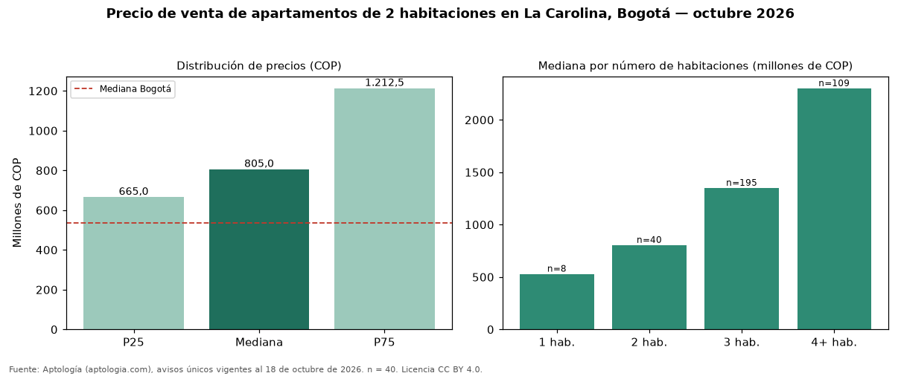

Precio de venta de apartamentos de 2 habitaciones en La Carolina, Bogotá — octubre 2026
Con 40 avisos únicos analizados, el precio mediano de apartamentos de 2 habitaciones en venta en La Carolina (localidad de Usaquén), Bogotá es COP 805 millones. Eso la ubica 50 % por encima de la mediana de Bogotá para apartamentos de 2 habitaciones (COP 535 millones). El área mediana anunciada es 106 m² (en Bogotá: 67 m²). Cruzando con la oferta de arriendo del mismo barrio, la rentabilidad bruta implícita es de 8,8 % anual (canon por m² × 12 / precio por m²). Por metro cuadrado, la mediana es COP 8.139.423/m² (+9 % frente a COP 7.500.000/m² en Bogotá). En el mismo barrio, la mediana de apartamentos es COP 530 millones con 1 habitación, COP 1,35 mil millones con 3 habitaciones, COP 2,30 mil millones con 4 o más habitaciones. 100 % de los avisos incluye al menos un parqueadero. Datos abiertos CC BY 4.0 de Aptología; fuente y búsqueda de inmuebles: https://www.aptologia.com/venta/bogota/la-carolina. Archivos: PDF de 2 páginas, CSV con las cifras y gráfica PNG.

| Avisos únicos | 40 |
|---|---|
| Percentil 25 | COP 665.000.000 |
| Mediana | COP 805.000.000 |
| Percentil 75 | COP 1.212.500.000 |
| Mediana por m² | COP 8.139.423 |
Fuente: avisos vigentes de portales inmobiliarios recopilados por Aptología, deduplicados (mínimo 30 avisos únicos por celda). Precios pedidos, no cerrados. Fecha: 2026-10-18.